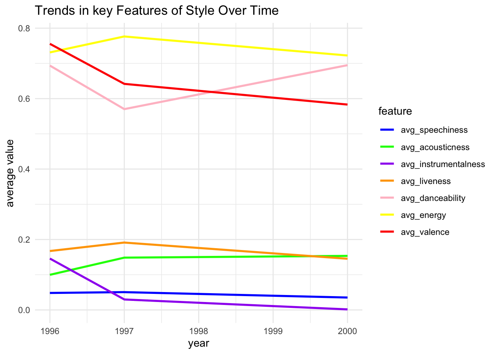
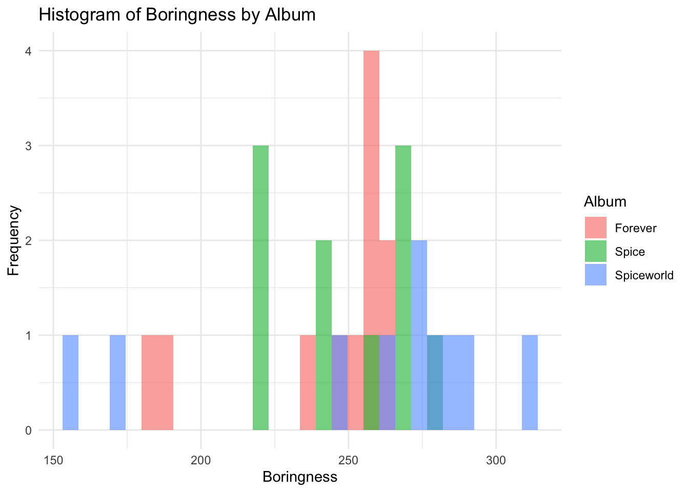

My goal is to analyse the change in style of an artist using the data in the uploaded CSV file (studio_album_tracks.csv). I will choose 10 features to help me analyse: acousticness, danceability, energy, instrumentalness, key, liveness, mode, speechiness, tempo, valence.
Acousticness is a confidence measure from 0.0 to 1.0 of whether the track is acoustic.
1.0 represents high confidence the track is acoustic.
Danceability describes how suitable a track is for dancing based on a combination of musical elements including tempo, rhythm stability, beat strength, and overall regularity.
A value of 0.0 is least danceable and 1.0 is most danceable.
Energy is a measure from 0.0 to 1.0 and represents a perceptual measure of intensity and activity. Typically, energetic tracks feel fast, loud, and noisy. For example, death metal has high energy, while a Bach prelude scores low on the scale. Perceptual features contributing to this attribute include dynamic range, perceived loudness, timbre, onset rate, and general entropy. 1.0 represents highly energetic.
Instrumentalness predicts whether a track contains no vocals. “Ooh” and “aah” sounds are treated as instrumental in this context. Rap or spoken word tracks are clearly “vocal”. The closer the instrumentalness value is to 1.0, the greater likelihood the track contains no vocal content. Values above 0.5 are intended to represent instrumental tracks, but confidence is higher as the value approaches 1.0.
The Key the track is in. Integers map to pitches using standard Pitch Class notation.
E.g. 0 = C, 1 = C♯/D♭, 2 = D, and so on. If no key was detected, the value is -1.
Liveness detects the presence of an audience in the recording. Higher liveness values represent an increased probability that the track was performed live. A value above 0.8 provides strong likelihood that the track is live.
Mode indicates the modality (major or minor) of a track, the type of scale from which its melodic content is derived. Major is represented by 1 and minor is 0.
Speechiness detects the presence of spoken words in a track. The more exclusively speech-like the recording (e.g. talk show, audio book, poetry), the closer to 1.0 the attribute value. Values above 0.66 describe tracks that are probably made entirely of spoken words. Values between 0.33 and 0.66 describe tracks that may contain both music and speech, either in sections or layered, including such cases as rap music. Values below 0.33 most likely represent music and other non-speech-like tracks.
The overall estimated tempo of a track in beats per minute (BPM). In musical terminology, tempo is the speed or pace of a given piece and derives directly from the average beat duration.
Valence is a measure from 0.0 to 1.0 describing the musical positiveness conveyed by a track. Tracks with high valence sound more positive (e.g. happy, cheerful, euphoric), while tracks with low valence sound more negative (e.g. sad, depressed, angry).
The following objects are masked from 'package:stats':
filter, lag
The following objects are masked from 'package:base':
intersect, setdiff, setequal, union
library(tidyr)library(reshape2)
Attaching package: 'reshape2'
The following object is masked from 'package:tidyr':
smiths
# Load the CSV filestudio_album_tracks <- readr::read_csv('https://raw.githubusercontent.com/rfordatascience/tidytuesday/master/data/2021/2021-12-14/studio_album_tracks.csv')
Rows: 31 Columns: 25
── Column specification ────────────────────────────────────────────────────────
Delimiter: ","
chr (9): artist_name, artist_id, album_id, track_id, track_name, album_nam...
dbl (15): album_release_year, danceability, energy, key, loudness, mode, sp...
date (1): album_release_date
ℹ Use `spec()` to retrieve the full column specification for this data.
ℹ Specify the column types or set `show_col_types = FALSE` to quiet this message.
# Convert album_release_date to Date formatstudio_album_tracks$album_release_date <-as.Date(studio_album_tracks$album_release_date, format ="%Y-%m-%d")
D.3.2 average audio features by year
This dataset contains data from 31 tracks in 3 albums. And the 3 albums (forever, spiceworld, spice) are released in three different years, 1996, 1997, and 2000 respectively.
Therefore, we can first group by the year, and compare the style of tracks in different years.
We calculate the mean value of the features of tracks of 3 years and save them into the new dataset
feature_summary <-melt(feature_group_by_year, id.vars ="album_release_year")#plotggplot(feature_summary, aes(x = album_release_year, y = value, color = variable)) +geom_line(size =1) +labs(title ="Trends in key Features of Style Over Time",x ="year",y ="average value",color ="feature" ) +theme_minimal() +scale_color_manual(values =c("avg_speechiness"="blue","avg_acousticness"="green","avg_instrumentalness"="purple","avg_liveness"="orange","avg_danceability"="pink","avg_energy"="yellow","avg_valence"="red" ))
Warning: Using `size` aesthetic for lines was deprecated in ggplot2 3.4.0.
ℹ Please use `linewidth` instead.

From the graph above, we can see that the style change a little bit from 1996 to 1997. More detailed:
There are features that not show a great variance between three album:
The average speechiness of the tracks in three albums maintain the same from 1996 to 2000, at about 0.05, which is a very low value of the speechiness. This means that the all the tracks are non-speech-like tracks.
The average liveness increased a little bit in 1997, but decrease back to origin in 2000, and the value is all below 0.2. This means there is little presence of an audience in the recording, most of the audios are not live
The average danceability decreased a lot in 1997, but increase back to origin in 2000, and the values are almost higher than 0.6. This means most of their songs are danceable, but in 1997 it is not so danceable.
The average energy increased a little in 1997, but decrease back to origin in 2000, and the values are all higher than 0.7. This means most of their songs can let people feel fast, loud, and noisy.
There are 3 features that show a strictly increase or decrease trend in three album:
The average instrumentalness decrease from 0.15 to 0.02 in 1997 or even becomes near 0 in 2000. This means that the the use of instruments was reduced in 1997, and even in the subsequent tracks, instruments were hardly heard.
The average valence also decrease a lot, from 0.75 to 0.59. This means that the music sounds less positive in the newer tracks, but still spread a positive mood.
The average acousticness increase from 0.1 to 0.15, the increase is not so obvious. This means that the tracks is more acoustic.
In summary, all the tracks are non-speechiness and non-liveness. The artist try to change the style a little bit in 1997. In 1997, the songs are more energetic, more acoustic, and less positive.
E.2 2.2 Boringness Test
In this test, I create an equation of calculating boringness:
\(boringness = loudness + tempo + (energy\times100) + (danceability\times100)\)
If boringness value is low, then it is boring. Vice versa.
The boringness of each track in the album is shown by the following graph:
# caluclate boringness data using the equationboringness_data <- studio_album_tracks %>%mutate(boringness = loudness + tempo + (energy*100) + (danceability*100))ggplot(boringness_data, aes(x = boringness, fill = album_name)) +geom_histogram(position ="identity", alpha =0.6, bins =30) +labs(title ="Histogram of Boringness by Album",x ="Boringness",y ="Frequency",fill ="Album" ) +theme_minimal() +scale_fill_discrete(name ="Album")

From this chart, we can see that the album with the highest average quality is the album Spice, which was the least boring when they first debuted. The album with the lowest average quality is the second album Spice World. The average value of the third album Forever has rebounded and even reached the highest value. This also confirms my analysis in the first part, which is consistent with the trend of their trying to make changes in some aspects, but finding that the effect is not good, and then returning to the original style.
Source Code
---title: "Style Analysis"format: htmleditor: visual---# 1 Purpose## 1.1 Define the GoalMy goal is to analyse the change in style of an artist using the data in the uploaded CSV file (studio_album_tracks.csv). I will choose 10 features to help me analyse: acousticness, danceability, energy, instrumentalness, key, liveness, mode, speechiness, tempo, valence.## 1.2 About each featuresSource from: <https://help.spotontrack.com/article/what-do-the-audio-features-mean>1. **Acousticness** is a confidence measure [from 0.0 to 1.0]{style="color:blue;"} of whether the track is acoustic. 1.0 represents high confidence the track is acoustic.2. **Danceability** describes [how suitable a track is for dancing based on a combination of musical elements]{style="color:blue;"} including tempo, rhythm stability, beat strength, and overall regularity. A value of 0.0 is least danceable and 1.0 is most danceable.3. **Energy** is a measure from 0.0 to 1.0 and represents [a perceptual measure of intensity and activity]{style="color:blue;"}. Typically, `energetic tracks feel fast, loud, and noisy`. For example, death metal has high energy, while a Bach prelude scores low on the scale. Perceptual features contributing to this attribute include dynamic range, perceived loudness, timbre, onset rate, and general entropy. 1.0 represents highly energetic.4. **Instrumentalness** predicts whether a track contains [no vocals]{style="color:blue;"}. "Ooh" and "aah" sounds are treated as instrumental in this context. Rap or spoken word tracks are clearly "vocal". The closer the instrumentalness value is to 1.0, the greater likelihood the track contains no vocal content. Values above 0.5 are intended to represent instrumental tracks, but confidence is higher as the value approaches 1.0.5. The **Key** the track is in. Integers map to pitches using standard Pitch Class notation. E.g. 0 = C, 1 = C♯/D♭, 2 = D, and so on. If no key was detected, the value is -1.6. **Liveness** detects the [presence of an audience in the recording]{style="color:blue;"}. Higher liveness values represent an increased probability that the track was performed live. A value above 0.8 provides strong likelihood that the track is live.7. **Mode** indicates the modality (major or minor) of a track, the type of scale from which its melodic content is derived. Major is represented by 1 and minor is 0.8. **Speechiness** detects [the presence of spoken words]{style="color:blue;"} in a track. The more exclusively speech-like the recording (e.g. talk show, audio book, poetry), the closer to 1.0 the attribute value. Values above 0.66 describe tracks that are probably made entirely of spoken words. Values between 0.33 and 0.66 describe tracks that may contain both music and speech, either in sections or layered, including such cases as rap music. Values below 0.33 most likely represent music and other non-speech-like tracks.9. The overall estimated **tempo** of a track in [beats per minute (BPM)]{style="color:blue;"}. In musical terminology, tempo is the speed or pace of a given piece and derives directly from the average beat duration.10. **Valence** is a measure from 0.0 to 1.0 describing [the musical positiveness conveyed by a track]{style="color:blue;"}. Tracks with high valence sound more positive (e.g. happy, cheerful, euphoric), while tracks with low valence sound more negative (e.g. sad, depressed, angry).## 1.3 About the data set and Data preprocessing### load the dataAll the data we need is from the csv: studio_album_tracks. Path: <https://github.com/rfordatascience/tidytuesday/blob/main/data/2021/2021-12-14/studio_album_tracks.csv>```{r}# Load necessary librarieslibrary(ggplot2)library(dplyr)library(tidyr)library(reshape2)# Load the CSV filestudio_album_tracks <- readr::read_csv('https://raw.githubusercontent.com/rfordatascience/tidytuesday/master/data/2021/2021-12-14/studio_album_tracks.csv')# Convert album_release_date to Date formatstudio_album_tracks$album_release_date <-as.Date(studio_album_tracks$album_release_date, format ="%Y-%m-%d")```### average audio features by yearThis dataset contains data from 31 tracks in 3 albums. And the 3 albums (forever, spiceworld, spice) are released in three different years, 1996, 1997, and 2000 respectively.Therefore, we can first group by the year, and compare the style of tracks in different years.We calculate the mean value of the features of tracks of 3 years and save them into the new dataset```{r}feature_group_by_year <- studio_album_tracks %>%group_by(album_release_year) %>%summarise(avg_speechiness =mean(speechiness, na.rm =TRUE),avg_acousticness =mean(acousticness, na.rm =TRUE),avg_instrumentalness =mean(instrumentalness, na.rm =TRUE),avg_liveness =mean(liveness, na.rm =TRUE),avg_danceability =mean(danceability, na.rm =TRUE),avg_energy =mean(energy, na.rm =TRUE),avg_valence =mean(valence, na.rm =TRUE),# avg_tempo = mean(tempo, na.rm = TRUE),# avg_loudness = mean(loudness, na.rm = TRUE) )feature_group_by_year```# 2 Data Analysis## 2.1 Plot the graph of average```{r}feature_summary <-melt(feature_group_by_year, id.vars ="album_release_year")#plotggplot(feature_summary, aes(x = album_release_year, y = value, color = variable)) +geom_line(size =1) +labs(title ="Trends in key Features of Style Over Time",x ="year",y ="average value",color ="feature" ) +theme_minimal() +scale_color_manual(values =c("avg_speechiness"="blue","avg_acousticness"="green","avg_instrumentalness"="purple","avg_liveness"="orange","avg_danceability"="pink","avg_energy"="yellow","avg_valence"="red" ))```From the graph above, we can see that the style change a little bit from 1996 to 1997. More detailed:There are features that not show a great variance between three album:- The average speechiness of the tracks in three albums maintain the same from 1996 to 2000, at about 0.05, which is a very low value of the speechiness. [This means that the all the tracks are non-speech-like tracks.]{style="color:blue;"}- The average liveness increased a little bit in 1997, but decrease back to origin in 2000, and the value is all below 0.2. This means there is [little presence of an audience in the recording, most of the audios are not live]{style="color:blue;"}- The average danceability decreased a lot in 1997, but increase back to origin in 2000, and the values are almost higher than 0.6. This means [most of their songs are danceable, but in 1997 it is not so danceable.]{style="color:blue;"}- The average energy increased a little in 1997, but decrease back to origin in 2000, and the values are all higher than 0.7. This means [most of their songs can let people feel fast, loud, and noisy.]{style="color:blue;"}There are 3 features that show a strictly increase or decrease trend in three album:- The average instrumentalness decrease from 0.15 to 0.02 in 1997 or even becomes near 0 in 2000. This means that the [the use of instruments was reduced in 1997, and even in the subsequent tracks, instruments were hardly heard.]{style="color:blue;"}- The average valence also decrease a lot, from 0.75 to 0.59. This means that [the music sounds less positive in the newer tracks, but still spread a positive mood.]{style="color:blue;"}- The average acousticness increase from 0.1 to 0.15, the increase is not so obvious. This means that [the tracks is more acoustic.]{style="color:blue;"}In summary, all the tracks are non-speechiness and non-liveness. The artist try to change the style a little bit in 1997. In 1997, the songs are more energetic, more acoustic, and less positive.## 2.2 Boringness TestIn this test, I create an equation of calculating boringness:$boringness = loudness + tempo + (energy\times100) + (danceability\times100)$If boringness value is low, then it is boring. Vice versa.The boringness of each track in the album is shown by the following graph:```{r}# caluclate boringness data using the equationboringness_data <- studio_album_tracks %>%mutate(boringness = loudness + tempo + (energy*100) + (danceability*100))ggplot(boringness_data, aes(x = boringness, fill = album_name)) +geom_histogram(position ="identity", alpha =0.6, bins =30) +labs(title ="Histogram of Boringness by Album",x ="Boringness",y ="Frequency",fill ="Album" ) +theme_minimal() +scale_fill_discrete(name ="Album")```From this chart, we can see that the album with the highest average quality is the album Spice, which was the least boring when they first debuted. The album with the lowest average quality is the second album Spice World. The average value of the third album Forever has rebounded and even reached the highest value. This also confirms my analysis in the first part, which is consistent with the trend of their trying to make changes in some aspects, but finding that the effect is not good, and then returning to the original style.